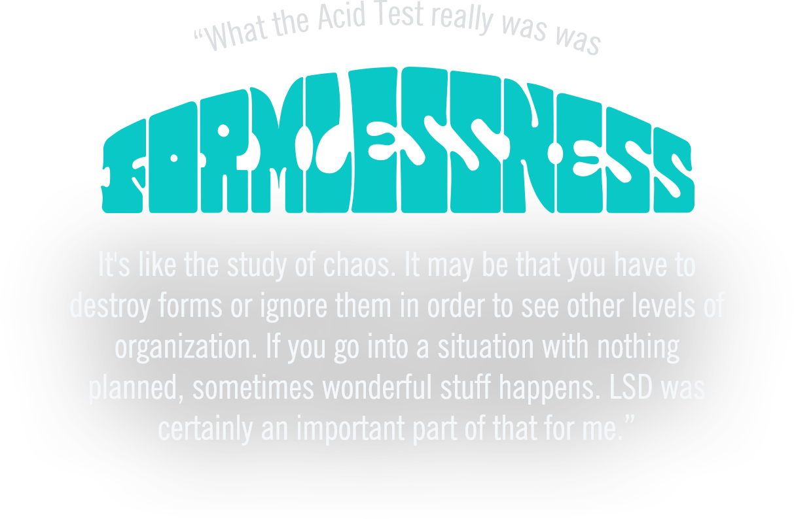
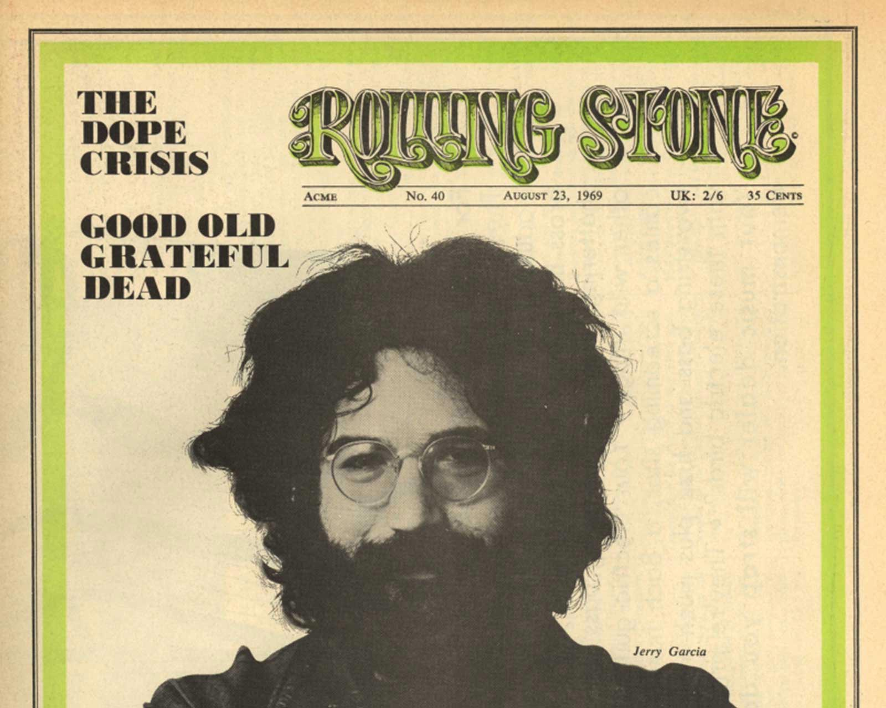

Follow Jerry through the years
1942
August 1 - Jerome John Garcia is born in San Francisco, CA. to Jose Ramon Joe” Garcia and Ruth Marie “Bobbie” Garcia, joining older brother Clifford "Tiff" Ramon
1947
Spring - A wood chopping accident with his older brother at the Garcia family cabin causes Jerry to lose much of the middle finger on his right hand at the age of five.
Fall - Jerry's father drowns while on a fishing trip.
1950
Jerry and Tiff move in with their maternal grandparents for a five-year stint. Jerry attends Monroe Elementary School, and is greatly encouraged in his artistic abilities by his third grade teacher. Through her, he discovers that being a creative person is a viable possibility in life. It is during this time that Jerry picks up the five-string banjo.
1953
Garcia is introduced to early rock & roll and rhythm & blues by his brother. He is inspired by Ray Charles, John Lee Hooker, B. B. King, Hank Ballard, and Chuck Berry.
1957
On his fifteenth birthday, Jerry receives an accordion. Disappointed, he complains until the instrument is exchanged for an electric guitar and amplifier, and his stepfather soon introduces him to an open-tuning style.
1960
April -Hoping to see the world, Jerry enlists in the US Army at age seventeen, and completes basic combat training at Fort Ord near Monterey on the Pacific Coast.
December - Jerry is discharged from the Army only months after joining, on the basis of “lack of suitability to the military lifestyle."
1961
February 20 - Jerry narrowly survives a major car accident which changes his focus. He later cites it as a “slingshot for the rest of [his] life.” This revelation causes him to choose the guitar over his hobby of painting and drawing.
Spring - Jerry meets Bob Hunter at Commedia Theater in Palo Alto, they play their only two paying gigs together as Bob & Jerry, earning ten dollars for the shows.
Summer - Garcia, Leicester, & Hunter form and play together at the Boar’s Head in San Carlos, CA. Jerry would later meet David Nelson during his time at the Boar’s Head.
1963
Fall - Jerry forms The Black Mountain Boys with friends David Nelson and Eric Thompson
December 8 - Daughter, Heather, is born to Jerry and Sara.
1964
Spring - Jerry, Ron “Pigpen” McKernan, and Bob Weir join forces as Mother McCree’s Uptown Jug Champions.
1965
May 5 - Phil Lesh and Bill Kreutzmann join Jerry, Pigpen, and Bob to perform their first gig as The Warlocks at Magoo’s Pizza in Menlo Park, CA.
December 4 - The Warlocks change their name to Grateful Dead, and perform their first of many shows as the house band at a Ken Kesey Acid Test in San Jose, CA

1966
October - Jerry and the rest of the band move into a communal house situated at 710 Ashbury Street. It becomes a fixture on the local music scene—providing a venue for many free concerts throughout the year-and-a-half they live there. This leads to the Grateful Dead performing more free concerts than any other band in history.
December - Jerry starts dating Carolyn Adams, also known as Mountain Girl, after she breaks off her marriage with George Walker, a member of the Merry Pranksters.
1969
May - Jerry enters his "pedal steel flirtation period," according to Bob Weir, which continues through to 1974. During this time he records one of the best known steel solos on Crosby, Stills, & Nash's "Teach Your Children."
August 7 - Jerry, along with David Nelson, John “Marmaduke” Dawson, Bob Matthews, and Mickey Hart perform their first show as New Riders of the Purple Sage. Jerry continues as an official member of the band until November 1971. The band frequently opens for the Grateful Dead during this period.
August 23 - Jerry appears on the cover of Rolling Stone Magazine for the first of twelve total covers.

1970
February 2 - Mountain Girl gives birth to Garcia's second daughter, Annabelle Walker Garcia.
September 28 = Jerry's mother dies due to complications from a car accident in San Francisco.
1973
March 2 - Jerry, John Kahn, David Grisman, Peter Rowan, and Richard Greene perform for the first time as Old & in the Way at the Record Plant in Sausalito, CA. Vassar Clements would later replace Greene on fiddle.
1974
September 21 - Mountain Girl gives birth to Garcia's third daughter, Theresa Adams "Trixie" Garcia
1975
August 5 - Jerry performs under the name Jerry Garcia Band for the first time, alongside John Kahn, Nicky Hopkins, and Ron Tutt at Keystone in Berkeley, CA.
1979
August 4 - Jerry first plays Tiger onstage at the Oakland Auditorium.
1980
December 31 - Jerry and Mountain Girl marry.
1982
April 13 - Jerry and Bob Weir appear for the first time on Late Night with David Letterman performing “Deep Elem Blues” and “Monkey & The Engineer.”
1985
January - Jerry's decade-long heroin addiction culminates in the rest of the Grateful Dead holding an intervention. Given the choice between the band or the drugs, Jerry agrees to check into a rehabilitation center in Oakland, CA.
January 18 - Before the start of his program in Oakland, Jerry is arrested for drug possession in Golden Gate Park; he subsequently attends a drug diversion program.
1986
July 10 - Jerry lapses into a near-fatal diabetic coma for five days, after which he has to relearn the guitar.
December 15 - The Grateful Dead return to performing five months after Jerry emerges from his coma.
1987
Named in tribute to Jerry, ice cream-makers Ben & Jerry’s release Cherry Garcia.
December 20 - Manasha gives birth to Jerry's youngest daughter, Keelin Noel Garcia.
1988
Jerry becomes a certified SCUBA diver
1992
August 16 - Jerry falls ill, and the Grateful Dead cancels their upcoming Fall Tour.
1994
January 19 - The Grateful Dead is inducted into the Rock and Roll Hall of Fame.
February 14 - Jerry and Deborah Koons marry on Valentine's Day in Sausalito, CA.
1995
August 9 - Jerry passes away at Serenity Knolls Treatment Center in Forest Knolls, CA, at age fifty-three.